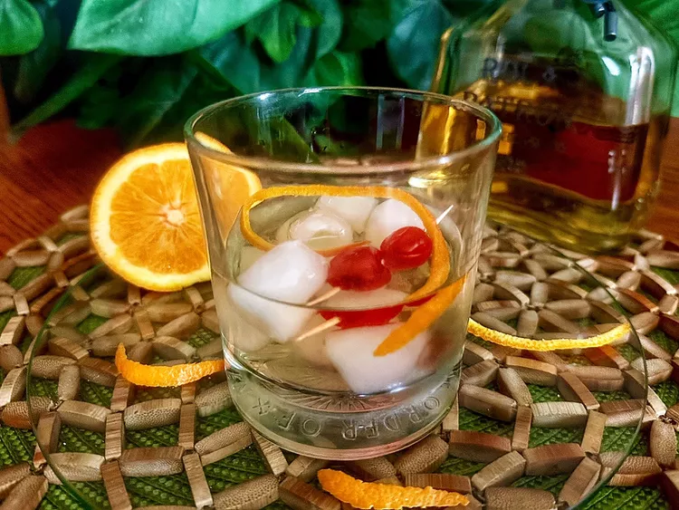

Home
Tequila Old Fashioned

Description
For this tequila old fashioned, I substituted Roca Patron Anejo. Tequila is my liquor of choice, and makes this drink smooth, citrusy, and absolutely delicious.
Ingredients
- 4 maraschino cherries, stems removed, divided
- 1 orange slice
- 6 ice cubes, or more if desired
- 2 fluid ounces anejo tequila
- 1 fluid ounce Cointreau
- 3 dashes bitters
- 1 orange twist
Steps
- Place orange slice and 2 cherries in a rocks glass, and crush with a muddler. Add ice cubes to glass. Add tequila, Cointreau and bitters; stir. Garnish with additional 2 cherries and an orange twist.